Under the Charts tab are a range of tools to generate and style charts to visualise patterns in data loaded into the Shiny application. The charts are generated using the ggplot package and can be exported as a .png file. For further information about best-practice for using charts Fundamentals of Data Visualisation is recommended.
Barplots can be used to visualise amounts for a set of groups or categories. maplandscape uses ggplot’s geom_col to generate barplots.
Head to the Charts tab in the navbar and select the layer that contains columns that you want to visualise on a barplot.
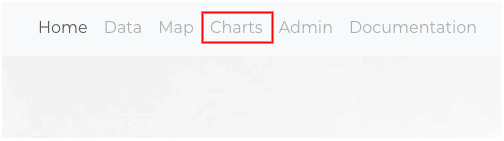
Select bar plot from the dropdown list of available Chart types.
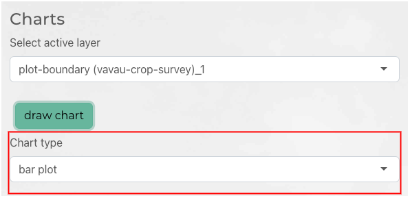
Select the Grouping variable and the Summary variable; the Grouping variable specifies the set of groups that amounts of the of Summary variable will be computed for. You can select from count, sum, or mean to compute amounts of the Summary variable per-group.
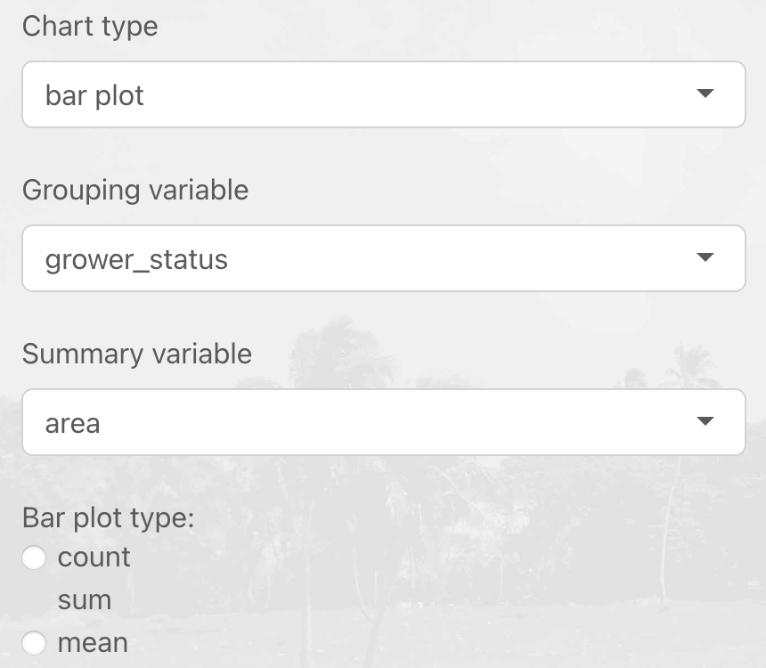
There are a range of other chart styling options you can set. You can use the slider to adjust the chart height to fill your display or requirements for export. There are also options to specify axis labels and font sizes.
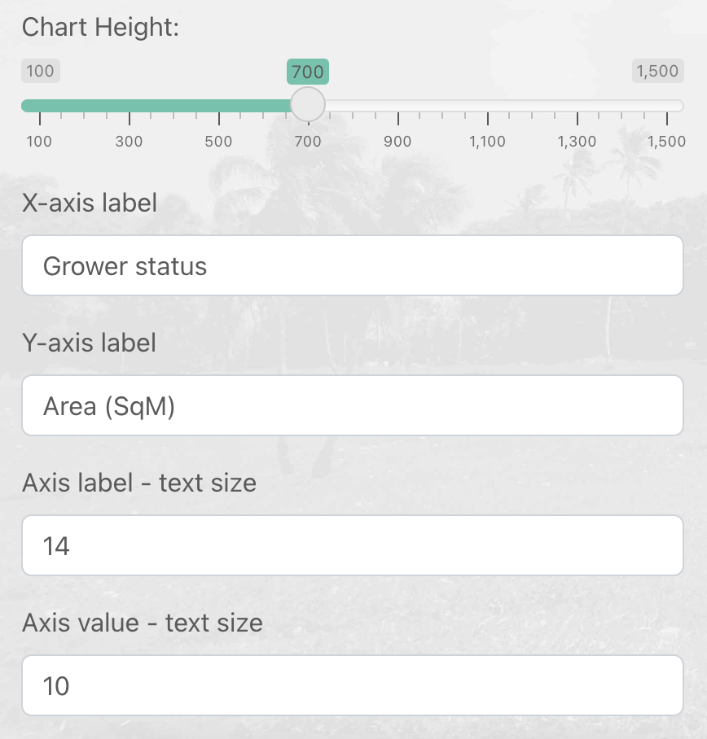
Click the draw chart button to render the barplot.
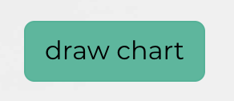
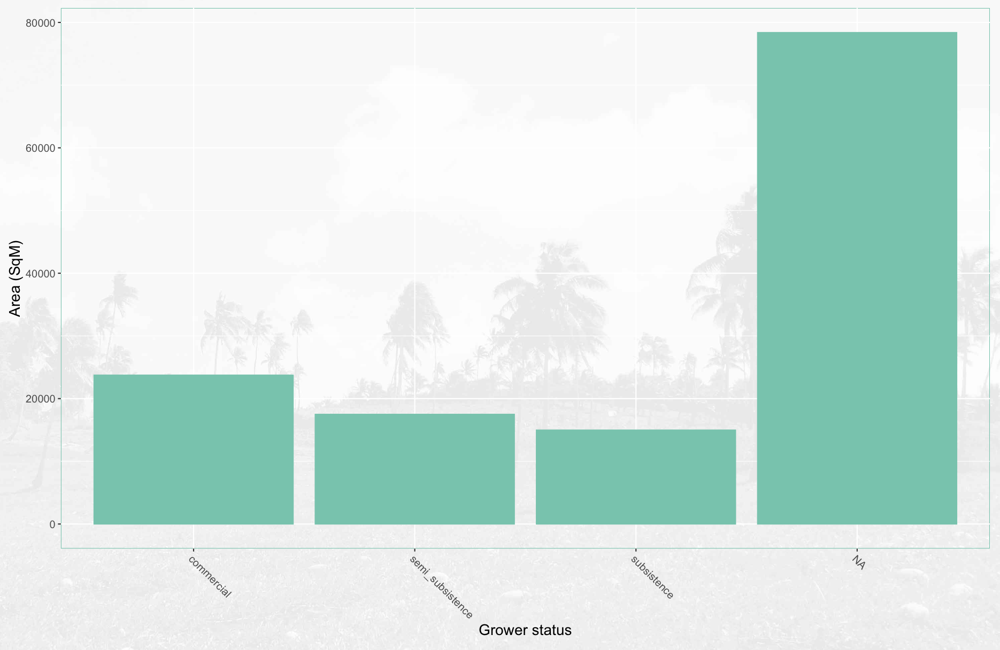
Histograms are used to visualise the distribution of a continuous variable. Under the Chart type dropdown list select Hisotgram.
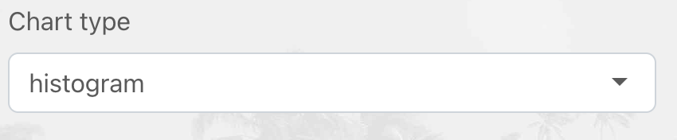
Use the X-axis variable dropdown list to select the continuous variable to generate a histogram for and enter a Histogram bin width to specify the width of bins for the histogram.
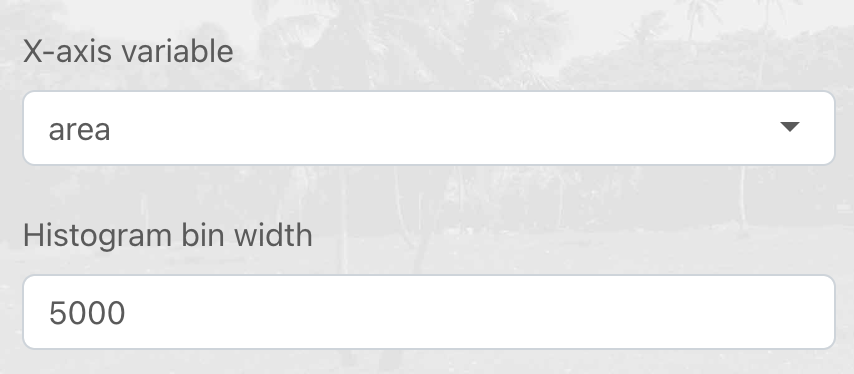
Click the draw chart button to render the histogram.
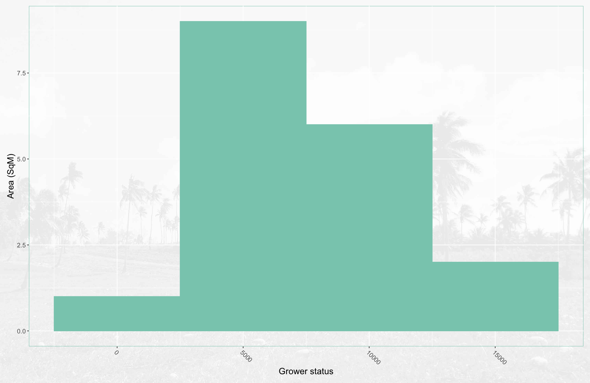
Scatter charts are used to visualise the relationship (or correlation) between two variables. You can select select scatter from the dropdown list of Chart types and select an X-axis variable and Y-axis variable to choose the two columns in the selected layer to plot on the scatter chart.
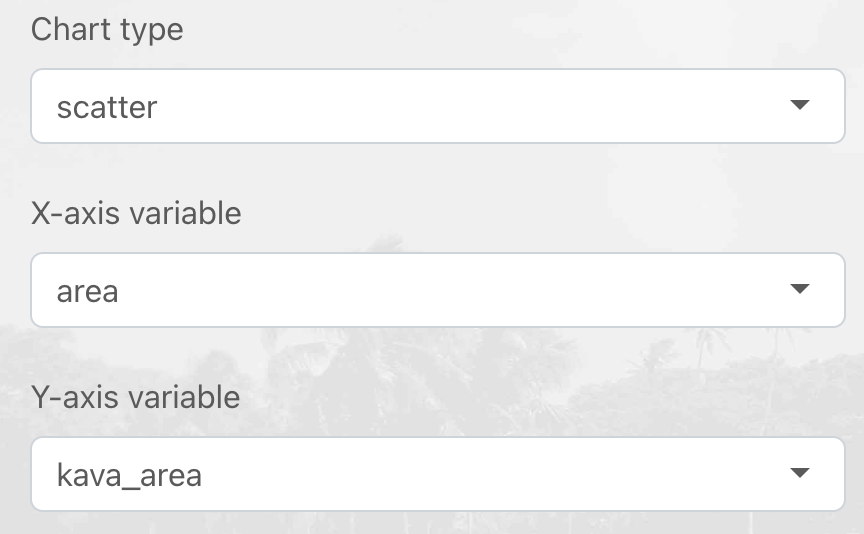
You can choose similar chart styling options for chart height, point size, and axis labels and fonts. When you are ready you can click the draw chart button to draw the scatter chart.
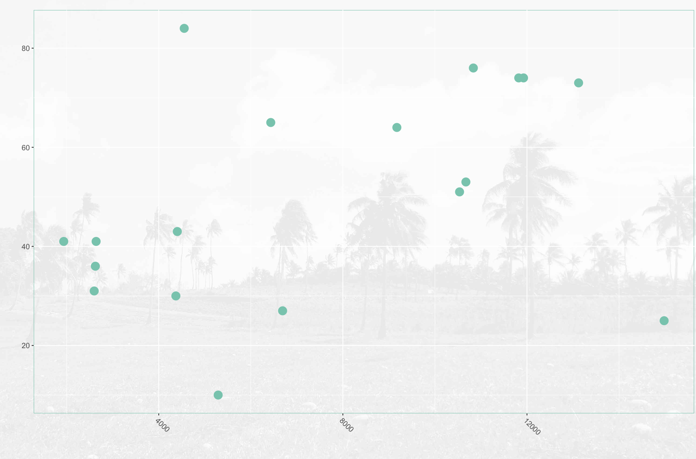